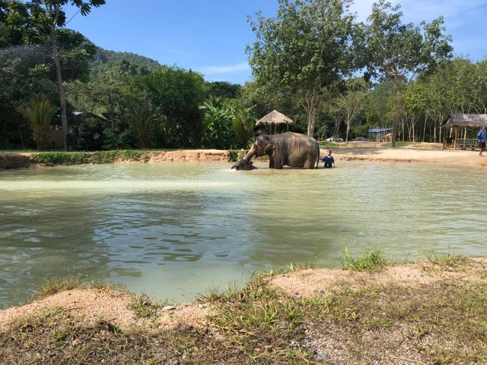

Find os her på de sociale medier:

 På denne endags-tur bliver i hentet på hotellet og kørt gennem landsbyen og bjergene, så læn jer tilbage og nyd udsigten gennem vinduet. Når i ankommer til destinationen bliver i mødt af de søde lokale som vil guide jer igennem dagens oplevelser. Først starter i med at skære mad til elefanterne. Deres kost består af søde kartofler og bananer. I vil få en skæreblok og en stor kniv, så i kan skære elefanternes mad ud i bidder, så de er nemmer og give til elefanterne til snablen. Efter går i, med jeres hold, ned til elefanterne. De står roligt i en rundkreds og venter, de er ikke spændt fast. Nu kan i gå rundt og fodre, tage billeder og beskue de flotte store dyr. Dernæst går turen ned i søen, her skal elefanter plaskes til. Det elsker de. I får spande, til at kaste vand op på de store dyr. Måske i er heldige og få et kys af elefantens store snabel, eller en af dem sprøjter vand på jer. De kan godt lide at drille. Den næste aktivitet er mudder. Elefanterne - store som små, skal nu smøres ind i mudder. Gør jer klar til at blive beskidte. Dyrene elsker at få dejligt afkølende mudder smurt på sin krop i den hede Thailandske varme. Efter dette skal de renses af for mudder og i skal op i bad. Der er brusebade klar til jer, efter dette vil i få serveret et lækkert autentisk Thailands måltid. Når i alle er mætte i maven og mætte for oplevelser, bliver i kørt helt hjem på jeres Hotel.
Tag på en af disse mange skønne båd ture. Disse ture findes i mange forskellige varianter, afhængigt af hvor mange af de smukke øer du kunne tænke dig at opleve, eller hvad du vil opleve. Måske du gerne vil bade og tage billeder i det smukke vand. Så er der massere af øer, f.eks James Bond Island, fra filmen. Her er der rig mulighed for at se de smukke klippe øer, og købe noget lækkert til den søde tand i mens i går rundt og kigger, og tid til et dyb i det krystalklare vand. Det kan også være du hellere vil opleve, nogle af de spændende eksotiske dyr. Så kan i vælge at stoppe ved Monkey Beach, undervejs på jeres sejltur og se de store aber kravle langs de helt smalle klipper. Men pas på, de har lange fingre, de stjæler tit fra turister. Ellers kan du vælge en båd tur med planlagt snorkling, hvor de lokale vil vise jer de flotteste steder at snorkle. Her er der også mulighed for at leje dykker udstyr og købe mad til fiskene. Se dem alle komme op til overfladen når der kastes mad ned i bølgen. .
Find os her på de sociale medier: